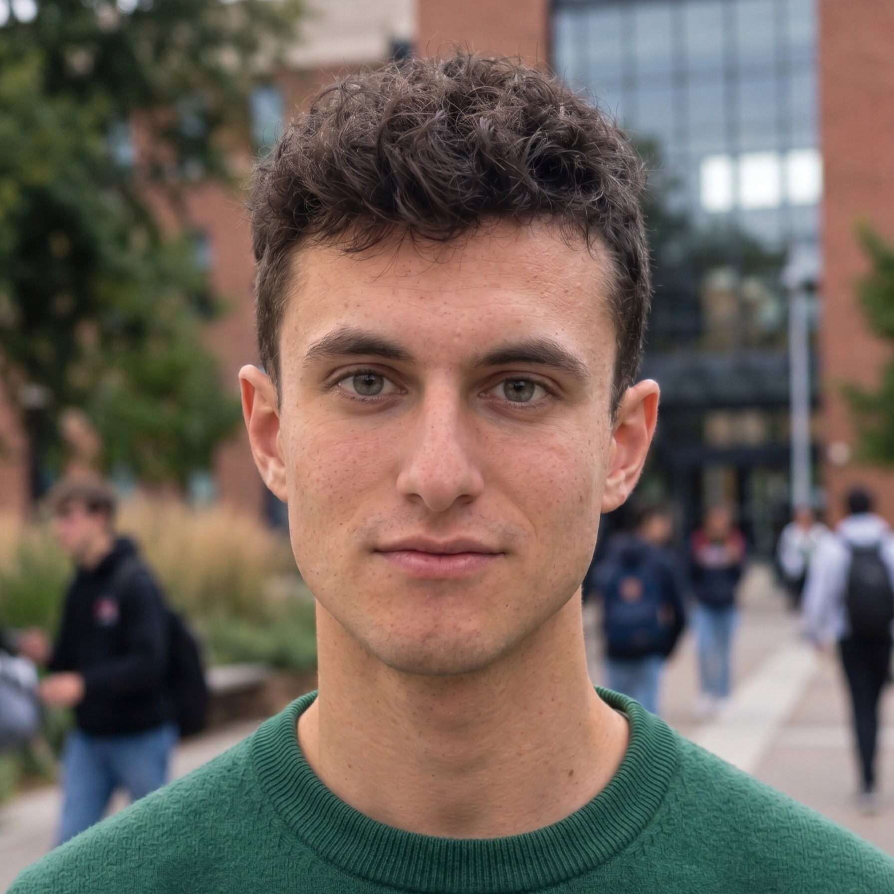

Riccardo Nasatti
Studente di Computer Science and Engineering al Politecnico di Milano, con specializzazione in Cybersecurity.

Biografia
Sono studente della laurea magistrale in Computer Science and Engineering al Politecnico di Milano, con specializzazione in Cybersecurity, e ho una laurea triennale in Ingegneria Informatica all’Università degli Studi di Bergamo. Il mio background unisce lo sviluppo software full-stack (applicazioni desktop e web) a un interesse crescente per la sicurezza di rete e il rilevamento delle minacce.
Per la tesi triennale ho progettato e valutato un sistema per rilevare minacce e anomalie sul protocollo DNS, esplorando come l’analisi del traffico e le moderne tecniche di detection possano proteggere le infrastrutture di rete critiche.
Oggi sto ampliando le competenze pratiche in sicurezza offensiva e difensiva, architettura dei sistemi e secure software engineering. Sono aperto a conoscere professionisti, ricercatori e altri studenti dell’ecosistema cybersecurity, a opportunità internazionali e a collaborazioni di tesi.
Percorso
Dall’informatica di base alla sicurezza di rete.
Laurea magistrale in Computer Science and Engineering
Politecnico di Milano, con specializzazione in Cybersecurity
In corsoLaurea triennale in Ingegneria Informatica
Università degli Studi di Bergamo
Stage e collaborazione
DDX srl
Diploma
ITIS Paleocapa
2023
Ogni connessione inizia con una query DNS. E se la query fosse un attacco?
Tesi triennale in Ingegneria Informatica (UniBG): progettazione e sviluppo di un sistema di rilevamento delle minacce nel traffico DNS con analisi euristica, Machine Learning e LLM, con relatore il Prof. Marco Abbadini e il gruppo UniBG SecLab.
- 96,13%
- accuratezza e F1 di CatBoost, inferenza sotto il millisecondo
- 20.000+
- query uniche nel dataset dopo la deduplicazione
- 4,5 M
- domini benigni reali (DNS-OARC) usati come traffico di fondo
Il problema
Bloccare il DNS significherebbe interrompere la rete, quindi il suo traffico viene spesso ispezionato poco. È un terreno ideale per esfiltrare dati, raggiungere i server C2 con domini generati algoritmicamente e ingannare gli utenti con domini che imitano brand legittimi.
- www.polimi.itbenigno
- mail.unibg.itbenigno
- qzkx7vh2pwm4.topdga
- nbswy3dpeb3w64tmmq.t.example.nettunneling
- examp1e-bank.comimposter
- xn--exmple-cua.comimposter (punycode)
Laboratorio isolato a due nodi
Kali Linux (VM): un orchestratore stocastico in Python alterna traffico benigno e attacchi.
- Traffico benigno4,5 milioni di domini reali (DNS-OARC)
- DNS TunnelingEsfiltrazione di dati in Base32
- DGADomini generati algoritmicamente
- DNS ImposterTyposquatting e attacchi omografi in Punycode
Ubuntu Server: architettura a microservizi orchestrata con Docker Compose.
- Pi-holeResolver DNS
- ZeekLog del traffico, letti in streaming
- TShark e Wireshark-webAnalisi dei pacchetti
- Pipeline PythonLunghezza, entropia di Shannon, rapporti fonetici, consonanti contigue, QType
- MongoDBDataset per ML e LLM
Rete isolata con firewall UFW in Default Deny, per prevenire il data poisoning.
Tre paradigmi a confronto
| Approccio | Accuratezza | Precision Imposter | Spiegabilità | Latenza |
|---|---|---|---|---|
| Regole euristiche | ≈ 54,5% | molto bassa | alta | microsecondi |
| CatBoost | 96,1% | 95% | bassa | < 1 ms |
| LLM locale (gpt-oss:120b) | 78,3% | 100% (recall 64%) | alta | diversi secondi |
Risultati ottenuti in ambiente di laboratorio. Il LLM è stato valutato su 400 query, CatBoost sul test set da 3.024 query.
La conclusione
Lo studio suggerisce un’architettura ibrida a due livelli: il Machine Learning filtra in tempo reale ad alta velocità, mentre un LLM in background valida e spiega in modo asincrono i casi ambigui.
Competenze
Dagli strumenti che uso per osservare il traffico ai linguaggi con cui costruisco gli strumenti.
Sicurezza di rete
Machine Learning e LLM
Sviluppo
Sistemi e dati
Contatti
Cerco opportunità di stage, tesi e collaborazione nella cybersecurity. Scrivimi o trovami online.